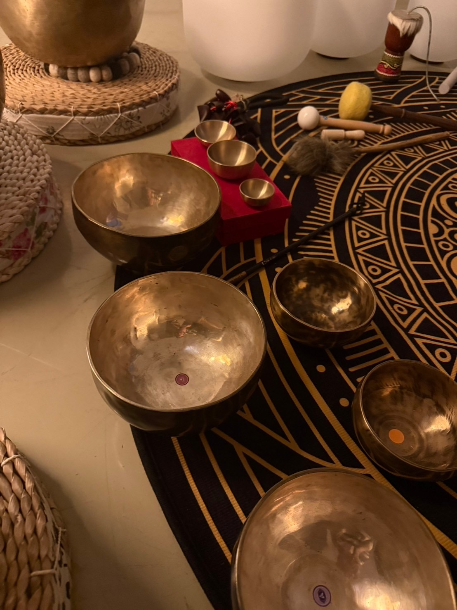
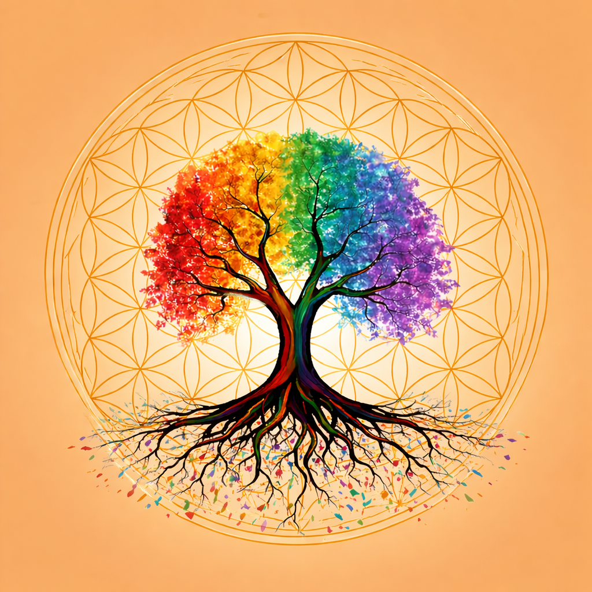
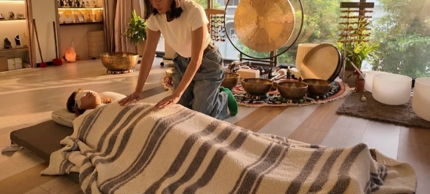

Welcome to a space created for your journey. Here, we offer a safe and supportive environment where you can slow down, reconnect, and be fully yourself. Whether you are seeking clarity, healing, or deeper meaning, you are gently guided and held every step of the way. Through shared practices of love, awareness, and transformation, this space is here to support your growth, nurture your inner peace, and help you return to what feels true within you. You are not alone—this is a place where your path is honored, and your becoming is welcomed.
Find A Session


Personalized healing for body, mind and spirit.
聲療 Sound Bath
1-on-1 Private · 60 min
A private 60-min sound bath session to release tension and restore inner stillness.
For Two · 60 min
A shared 60-min sound bath for two — ideal for couples or close friends seeking calm together.
靈氣聲療 Reiki & Sound Bath
60 min
Combines Reiki energy healing with sound bath— balancing body, mind and spirit.
90 min
An extended session for deeper restoration — more space for energy work and integration.
靈氣 Reiki
Available in-person or remotely.
到府服務 Home Visit
Sound bath or Reiki brought to your space.
團體課程 Group Session
Group sound bath for 3 or more.
Energy Balance
平衡穩定能量
Reiki works gently with the body's subtle energy field, fostering a felt sense of wholeness and inner equilibrium.
Deep Relaxation
深度放鬆
The resonant tones of singing bowls create an immersive soundscape, inviting a sense of deep stillness and ease.
Grounding & Support
安定與支持
Reiki sessions offer a calm, nurturing space for you to slow down, pause, and reconnect with a sense of inner stability.
Mindful Stillness
靜心安定
Many who practice sound meditation describe experiencing a quieter mind and a renewed sense of inner calm and presence.
Evening Rest
夜間靜息
The combination of sound and energy work can become a meaningful part of your wind-down ritual, gently supporting the body's natural readiness for rest.
Inner Renewal
內在更新
Reiki encourages a state of deep stillness, creating space for the body and mind to naturally settle, restore, and renew.
靜下來，給自己三次深呼吸，
然後為今天的自己抽一張牌。
Take a moment to pause and give yourself
three deep breaths, then draw a card
for yourself today.
Gentle Reminders
Fate Love Heal
Community Gathering 2026
© 2026 Fate Love Heal. All rights reserved.